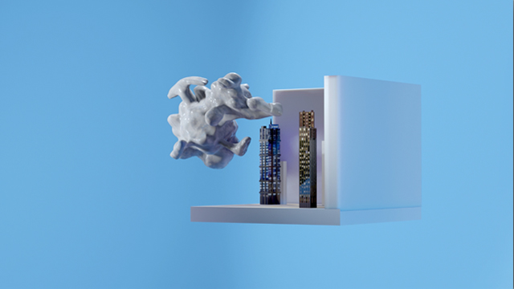

Mads E. Hvidtfeldt
Dolly
Mads E. Hvidtfeldt’s computer-generated work Dolly gradually sharpens our focus on a
two-walled gallery space filled with skyscrapers. Nearby, a 3d rendered cloud flickers with
a shiny fluid surface, keeping it in constant flux. Opposed to the usual puffy and vaporized
shapes of clouds, this one is massive and non-transparent, confusing the states of matter
by turning gas into a liquid.
A cloud exists visually but has no definite form. Just like the digital image, it is present but
intangible. Metaphorically referencing the virtual cloud wherein we constantly upload our
data, the illusory experience in the work of the animated cloud underlines the imagination
of the endless immaterial internet, which by contrast consists of large data centers in the
countryside and cables in the ocean.Correspondingly, the work title derives from Hurricane
Dolly that made landfall in 2008. A weather phenomenon similar to the cloud that seems
immaterial but with catastrophic physical consequences.
Simultaneously, the video title honors the cloning of files as the premise of the digital
by attributing the world-famous sheep, Dolly. The fluffy cloud of wool, skin, and bones
cemented a milestone in science, as it was the first cloned mammal, consequently igniting
a debate on the many possible outcomes of cloning technology. Maybe Dolly is the answer
to the question posed in the title of the novel Do Androids Dream of Electric Sheep? by
Philip K. Dick, later adapted into the film Blade Runner. Dreaming of Dolly, Hvidtfeldts
associative universes hints at how browsing resembles dreaming, constantly opening new
taps of subconsciously related memories stored on the world wide web.
Slowly, the liquid cloud takes over the gallery space and absorbs the skyscrapers. The
buildings are the plinths of the dream to live among the clouds. In this case, they represent
the dream of living in a digital cloud, making them postmodern Babel Towers reaching for
an eternity of data storage.
The tones of wind harps engrossing us are mixed with NASA’s spheric soundscape,
converting Pluto’s radio emissions into sound. Contrasting the deep sounds of our Sun
in the end of the video, Pluto emits almost lonely chimes as if it was mourning its loss
of recognition as a planet, now being a dwarf planet. The attempt of NASA to mediate
the existence of planets through sound encapsulates the logic of Hvidtfeldt artistic
practice, wherein he translates metaphors into form. Embodying the immaterial, Hvidtfeldt
renegotiates our relationship to the intangible, bringing it to life with imagery – just like
wind harps make us aware of the movement and existence of the wind.
– cand.mag in art history and curator Ida Schyum
Mads E Hvidtfeldt (b. 1989, DK) holds an MFA from the Academy of Fine Arts in Vienna and Städelschule
in Frankfurt. Through sculpture, paintings, and animations, he depict fantastical worlds unearthing the
underlying scenarios and structures of the everyday life in the information age. He has recently participated
in exhibitions at Foundation, Skulpturaubteilung Kurzbauergasse, and Aquarium in Vienna, as well as at
Kunsthal Charlottenborg and Den Frie in Copenhagen.
